Consejos de maquillaje
Las mujeres aprendemos a hacer muchas cosas de la nada y maquillarnos es una de ellas, pero cuando no tenemos talento o de plano nuestra mamá no nos dio ni un solo consejo al respecto, debemos buscar ayuda en otras partes.
Aquí te dejamos trucos para lograr un buen maquillaje ¡aunque no seas una experta!
Maquillaje
Es cierto que una mujer con la cara limpia puede ser igual de hermosa que una mujer que está bien maquillada, simplemente hay que saber valorar la belleza de una y otra. También es cierto que si te pasas con el maquillaje los resultados pueden ser horribles, por ese motivo siempre aconsejo que si te gusta maquillarte por supuesto debes hacerlo, ¡pero con moderación! Si te ves guapa no hace falta que sigas.
-
¿Pestañas bonitas?
Si quieres usar pestañas postizas, hazlo con pegamento quirúrgico; la clave es ponerlas desde el centro hacia los lados. Y aquí un secreto: sabrás que están bien puestas cuando no te molesten.
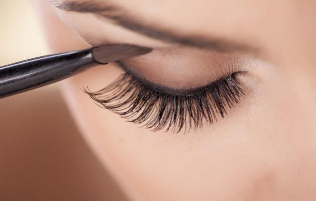 -
Oculta tus desvelos
¡Quita ojeras con naranja!.Si tienes ojeras muy marcadas, utiliza maquillaje en tonos naranja en esa zona y luego aplica el corrector.
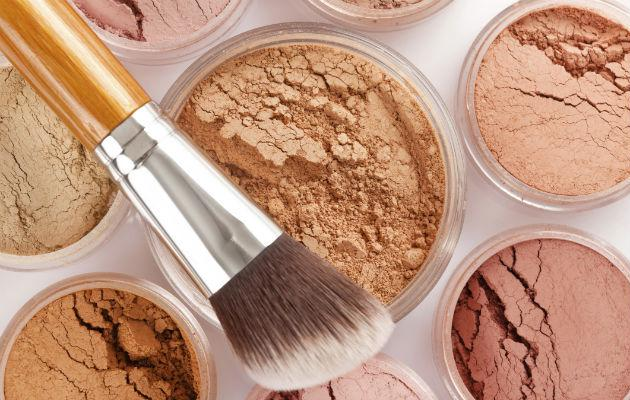 -
Ruborizate
Sonríe para el rubor El rubor es lo último que debes ponerte. La tendencia actual es marcar la manzana que se forma en tus pómulos al sonreír.
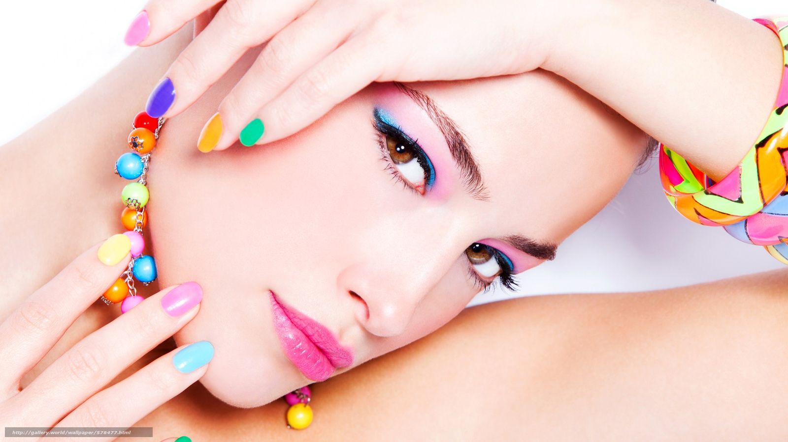 -
¿No tienes tiempo de maquillarte?
Sólo maquilla tus cejas para lograr un buen look cuando no tienes tiempo para aplicar más maquillaje
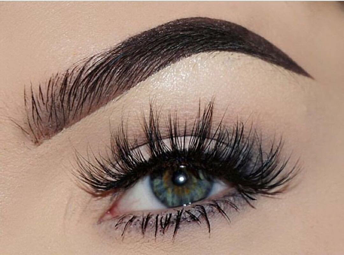 -
¿Tu lapiz delineador ya no pinta?
Para intensificar el color de tu lápiz delineador viejo, sólo calientalo unos segundos con un encendedor.
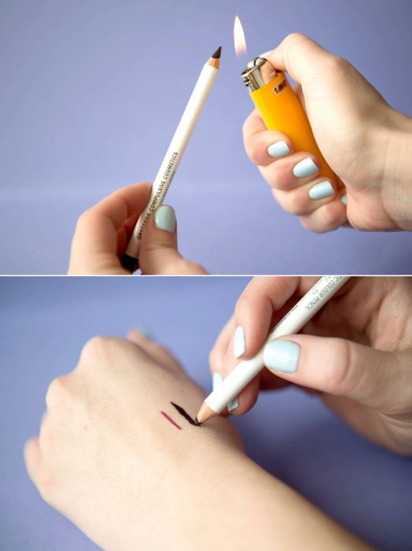 -
De claros a oscuros
El ideal del maquillaje es que tu cara parezca ovalada. Utiliza 3 tonos de maquillaje: uno claro para las partes donde te daría la luz (pómulos, barbilla y en medio de los ojos); otro más oscuro para las zonas de sombra (marca las líneas haciendo una cara de pescado); y la base, de tu tono de piel.
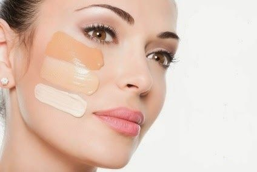
Cuidado de la piel
Algunas personas creen que para lucir una piel tersa y saludable, deben gastar todos sus ahorros en cremas costosas. Sin embargo, esto no tiene que ser así. Algunos consejos y cuidados básicos te ayudarán a mejorar la piel y tener un cutis envidiable. Te damos algunas ideas.
-
Limpieza a la noche
Al finalizar el día, es fundamental limpiar el rostro para quitar los restos de maquillaje, las células viejas, la suciedad, el polvo y las bacterias. La higiene ayuda a que la piel se oxigene, al quitar las obstrucciones que podían tapar los poros. Luego de la crema de limpieza, se sugiere lavarse con agua tibia.
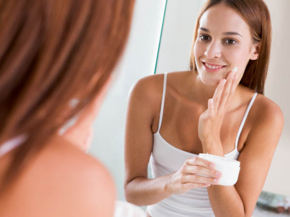 -
Protector solar antes de salir
Con la piel limpia y humectada, sólo falta la protección solar. Aunque uno no te vayas a tirar al sol, basta caminar unas cuadras o pararse en el patio a tender la ropa para que el sol queme la piel y deje manchas, además de correr el riesgo de contraer cáncer de piel. Por eso mejor elegir factor de protección 30, para arriba.
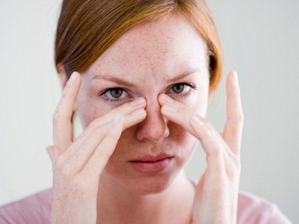 -
Para tener una piel sana, ¡no exfoliar!
La proliferación de productos “exfoliantes” instaló en las mujeres la costumbre de exfoliar la piel a menudo. Pero para los expertos, esto es un error. Las cremas con gránulos no exfolian y además irritan la piel.
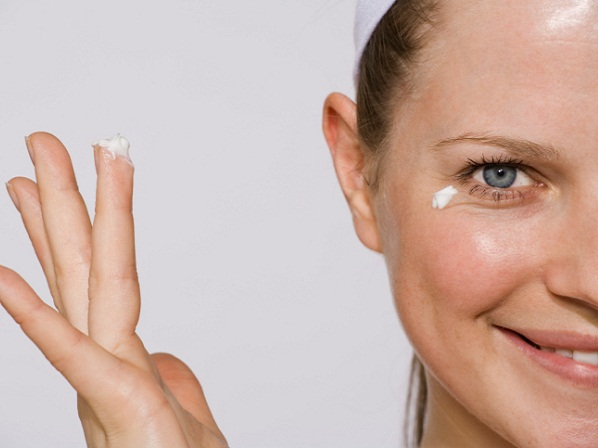 -
Solo uso jabón suave para la piel
¿La piel de tu cuerpo tiende a secarse, sobre todo después de la ducha? Es importante usar productos de cuidado de la piel que sean suaves y sin jabón para la rutina de limpieza. Si utilizás productos demasiado fuertes, tu piel puede volverse extremadamente seca y sentirse molesta. Los mejores productos que se pueden usar son: jabones ricos en lípidos.
-
Huye del estrés y la fatiga
La piel sensible reacciona ante situaciones de estrés y de fatiga con brotes y erupciones, así que nuestro consejo es que si tu piel es sensible, evites estas situaciones, practicando ejercicios de relajación.
-
Bebe más agua
Bebe más agua de tal forma que tu piel produzca menos grasa para prevenir erupciones.
Cabello bonito
Te gusta el pelo corto o largo? Es recomendable cortarlo al menos una vez al mes y realizar un suave masaje capilar una vez a la semana. A la hora de cepillarlo, conviene usar peines de púas anchas y hacerlo de atrás hacia delante, lo que fomentará la circulación sanguínea en tu cuero cabelludo.
-
Escoge el cepillo adecuado.
El cepillo depende de la cantidad de cabello que se tiene, así como si es lacio o rizado. Los lacios deben preferir las cerdas separadas, mientras los rizados tienen que evitarlos. Se debe verificar que el cepillo tenga gomita en las cerdas para no lastimar la piel.
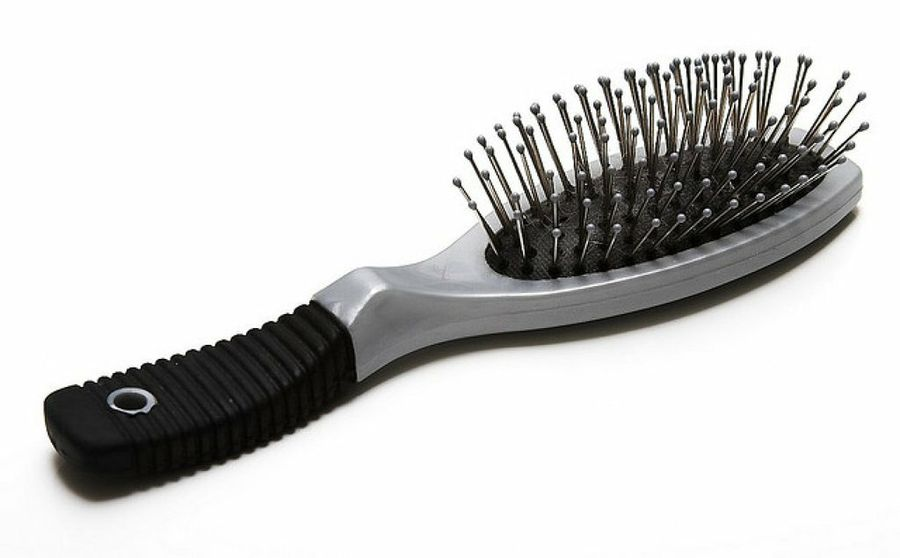 -
Baño de 5 minutos
Con la piel limpia y humectada, sólo falta la protección solar. Aunque uno no te vayas a tirar al sol, basta caminar unas cuadras o pararse en el patio a tender la ropa para que el sol queme la piel y deje manchas, además de correr el riesgo de contraer cáncer de piel. Por eso mejor elegir factor de protección 30, para arriba.
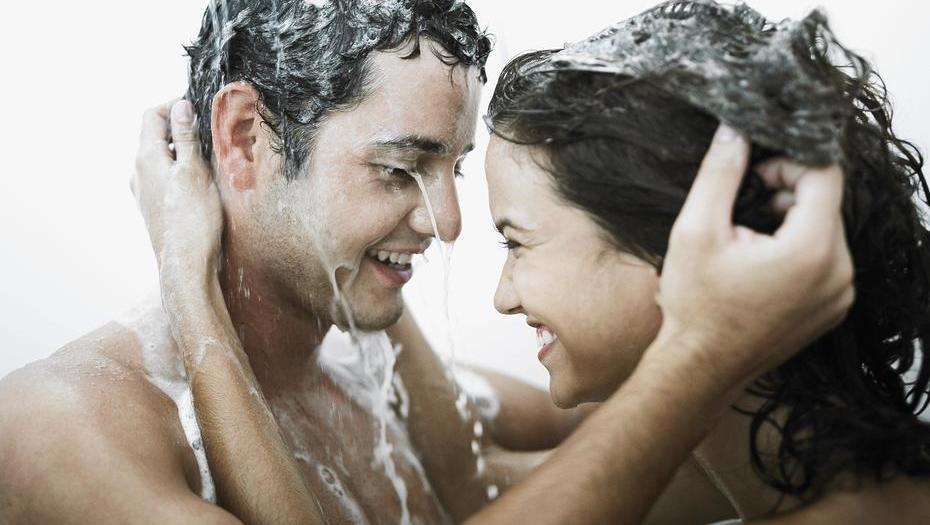 -
Es mejor suelto
Jamás te amarres el cabello húmedo y sécalo muy bien si te bañas antes de dormir.
-
El peor enemigo...El tinte
El estrés es uno de los principales enemigos. Tintes, sobre todo aquellos que van acompañados de sustancias como amoniaco y peróxido.
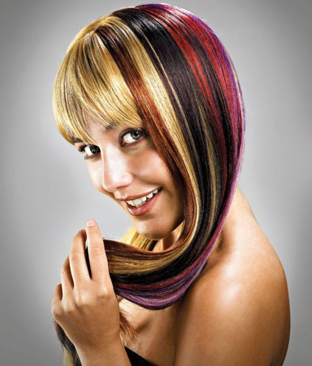